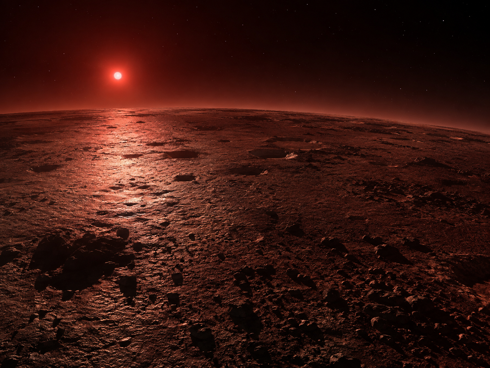
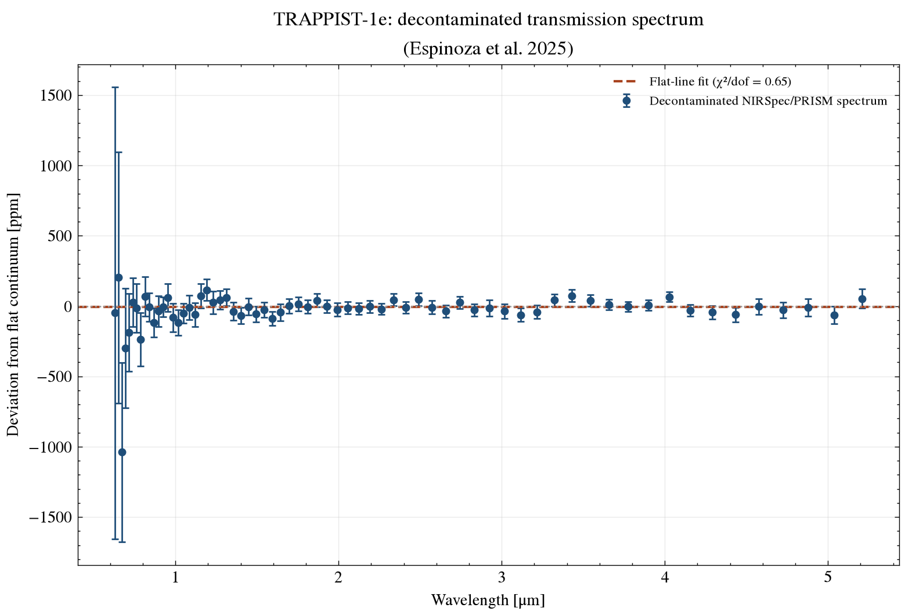
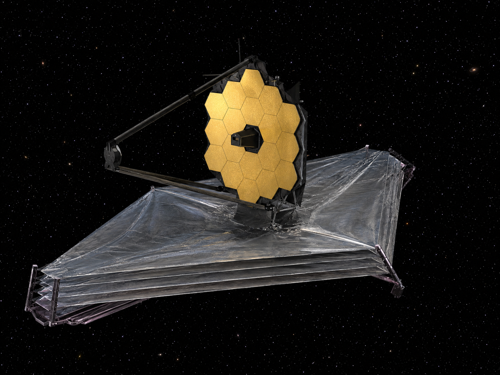

Exoplanet Atmosphere Report · JWST NIRSpec/PRISM
One of the most Earth-like planets known by size and insolation, orbiting an ultracool dwarf 12.4 parsecs away, and one of JWST's highest-priority habitable-zone targets. This page tests its own decontaminated NIRSpec/PRISM transmission spectrum for flatness and reports the result next to Espinoza et al. (2025)'s published atmosphere constraints.
AI-generated artist's concept of TRAPPIST-1 e — not a real photograph. All data and figures in this report come from actual JWST NIRSpec/PRISM observations (see below).
Queried live from the NASA Exoplanet Archive TAP service (pscomppars).
| Radius | 0.92 Earth radii |
|---|---|
| Mass | 0.69 Earth masses |
| Orbital period | 6.10 days |
| Semi-major axis | 0.0293 AU |
| Equilibrium temperature | 249.7 K (within the conventional habitable zone for its ultracool host) |
| Host star | TRAPPIST-1, ultracool M8V dwarf, Teff = 2566 K, 0.119 Rsun, 0.090 Msun |
| Distance | 12.4 parsecs (~40.5 light-years) |
| Discovery | 2017, transit photometry (TRAPPIST + Spitzer + K2) |
TRAPPIST-1 is a system of seven roughly Earth-sized rocky planets around an ultracool M dwarf, discovered by the TRAPPIST, Spitzer, and K2 surveys and refined through years of follow-up. Planet e sits in the conventional habitable zone, and its small, cool, nearby host star gives an unusually favorable transit depth for atmospheric spectroscopy on a rocky planet — one of the reasons it's a flagship JWST target despite its Earth-like size.
Espinoza et al. (2025), part of the JWST-TST DREAMS program, combined four NIRSpec/PRISM transits of TRAPPIST-1e and corrected the resulting spectrum for contamination from unocculted starspots and faculae on the host star — a real, significant systematic for any planet transiting an active M dwarf, since spots and faculae imprint their own wavelength-dependent signal on the transit depth independent of the planet's atmosphere.

AI-generated 3D-render-style concept — one of several atmosphere scenarios still statistically consistent with the flat spectrum below, not a confirmed depiction.
The figure shows the final spectrum after stellar-contamination correction, plotted as deviation from a flat continuum, with this page's own inverse-variance-weighted flat-line fit overlaid.

scripts/analyze_spectrum.py.A chi-squared of 42.85 over 66 degrees of freedom (reduced χ² = 0.65, p = 0.988) is consistent with a flat, featureless spectrum, matching the paper's own description. That flatness by itself doesn't prove the planet has no atmosphere — a high-altitude cloud deck or a compact, high-mean-molecular-weight atmosphere can look flat too. This chi-squared treats each point's quoted error as independent; the paper's own stellar-contamination correction was derived with a Gaussian-process marginalization over correlated systematics, which a diagonal chi-squared here doesn't reproduce. Espinoza et al. (2025) go further, running the spectrum through their own retrieval framework, and report ruling out cloud-free, hydrogen-dominated atmospheres (at least 80% H2 by volume) at better than 3σ, while denser secondary atmospheres remain an open possibility, addressed further in the companion analysis by Glidden et al. (2025).
System parameters come from the NASA Exoplanet Archive TAP service. The spectrum is the decontaminated, corrected combination of four NIRSpec/PRISM transits from Espinoza et al. (2025) — see data/SOURCE.md for the exact file and where it comes from, and scripts/analyze_spectrum.py for the flat-line analysis (python scripts/analyze_spectrum.py to rerun it). This page's own chi-squared test is a first-pass flatness check with a diagonal-error assumption; it isn't the retrieval the paper runs to reach its own quantitative atmosphere limits, and shouldn't be read as reproducing that result.

AI-generated illustration of the James Webb Space Telescope, whose NIRSpec instrument took the real PRISM transit spectra used in this report. Not an official mission photograph — see NASA/JWST for real imagery.